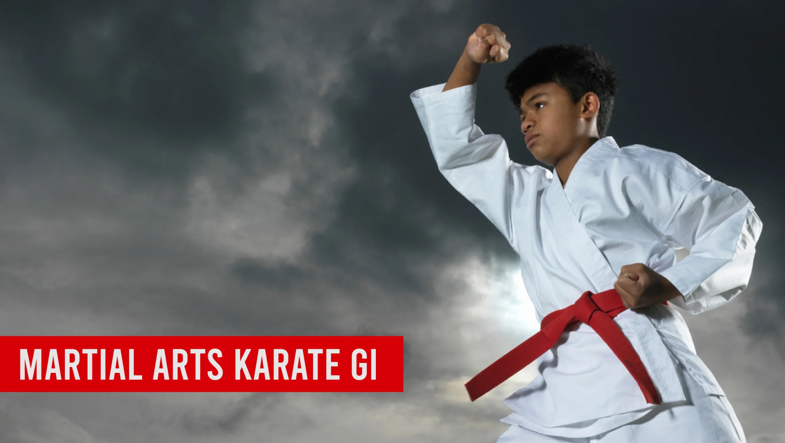
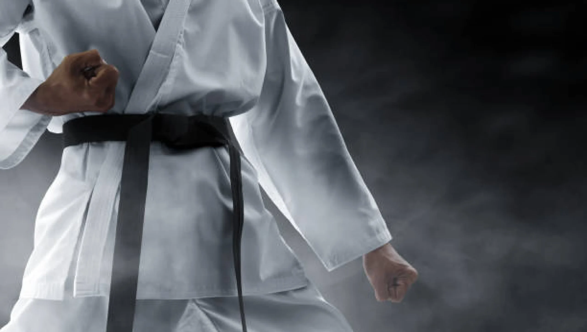
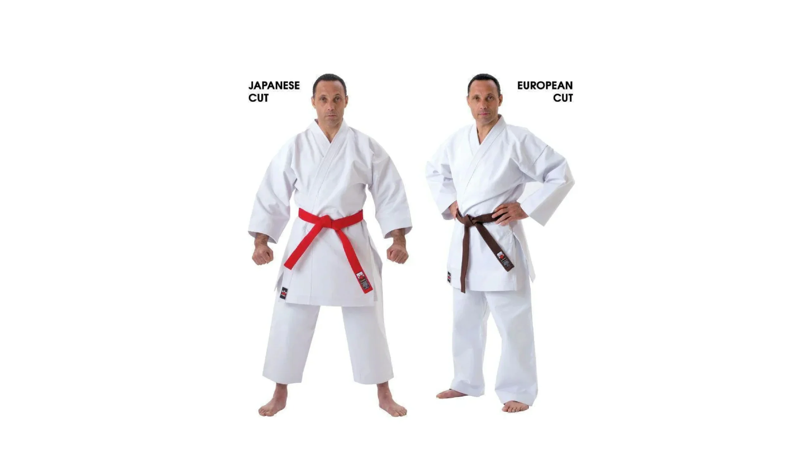

Martial Arts Karate Gi: A Guide to Styles, Materials, and Sizes

Introduction
The martial arts karate gi is not just a uniform; it’s a critical piece of equipment designed to optimize your training experience and performance in competitions. With various styles, materials, and sizes available on the market, selecting the right karate gi can significantly affect your comfort and effectiveness during practice.
This guide will help you navigate the complexities of choosing a karate gi that suits your needs, ensuring you make an informed purchase that enhances your martial arts journey. By the end of this article, you’ll be well-equipped to choose the perfect karate gi to match your training and performance requirements.
A karate gi is more than just clothing. It represents your commitment to the art and is a symbol of respect for the discipline. Choosing the right gi is crucial for both training and competition. This article covers styles, materials, sizes, and tips on where to buy your martial arts karate gi.
Key Points
- A well-fitted karate gi enhances comfort and performance during training and competitions.
- Various styles of karate gi are available for purchase, catering to different preferences and needs.
- Understanding the materials used in manufacturing karate gi helps buyers make informed choices.
- Selecting the right size is essential for comfort, especially for different body types.
- Guidance on where to buy karate gi, including online and local stores.
Understanding the Karate Gi
The karate gi is the fundamental uniform in martial arts, embodying discipline, respect, and tradition. When you wear your martial arts karate gi, you’re not just putting on clothes; you’re stepping into a legacy that connects you to countless practitioners before you.
The gi is typically made up of three main parts: the jacket, the pants, and the belt. Each piece plays a role in your training, allowing for flexibility and movement. The right gi can help you perform techniques more effectively, while the wrong one might restrict your movements or cause discomfort.
Styles of Karate Gi
There are several styles of karate gi designed for different practices and preferences. Here’s is an analysis of the most general types.
Traditional Karate Gi
Traditional karate gi often reflects martial arts history and values. They are typically made from heavier cotton, providing durability and a classic look.
Table
| Feature | Description |
|---|---|
| Material | Heavy cotton (often 10-14 oz) |
| Design | Simple, often white or black |
| Usage | Suitable for traditional training |
When purchasing a traditional gi, consider your specific karate style. For example, Goju-Ryu practitioners might prefer a gi that allows for a full range of motion, while Shito-Ryu practitioners may look for something more fitted.
Modern Karate Gi
Modern karate gi feature contemporary designs that appeal to today’s practitioners. These gi often incorporate lighter materials and innovative designs.
Table
| Feature | Description |
|---|---|
| Material | Cotton-polyester blends |
| Design | Sleeker, with added features like pockets |
| Usage | Great for everyday training and competition |
Brands like Adidas and Mizuno have embraced modern styles, offering gi that not only perform well but also look great.
Competition Gi
Competition gi are specifically designed for tournaments. They have distinct features that support performance during high-stakes matches.
Table
| Feature | Description |
|---|---|
| Material | Lightweight, often ripstop or polyester |
| Design | Tailored fit for reduced drag |
| Usage | Ideal for competitive settings |
When selecting a gi for competition, pay attention to the regulations of the tournament, as some competitions have strict guidelines regarding gi specifications.
Materials Used in Karate Gi
Materials play a significant role in the functionality and performance of a karate gi. Let’s explore the most common materials and their benefits.
Cotton
Cotton is a classic choice for martial arts karate gi. It’s breathable, comfortable, and provides good durability.
Table
| Pros | Cons |
|---|---|
| Soft and comfortable | Can shrink in the wash |
| Breathable | May wear out faster than synthetic options |
Brands like Kataaro and Shureido are known for their high-quality cotton gi that withstand rigorous training.
Polyester Blends
Polyester blends are becoming increasingly popular due to their durability and ease of care.
Table
| Pros | Cons |
|---|---|
| Resistant to wrinkles | Less breathable than pure cotton |
| Quick-drying | May feel less comfortable in hot weather |
Look for brands like ProForce and Tokaido, which offer excellent polyester blend options that balance comfort and durability.
Ripstop Fabric
Ripstop fabric is a super strong material that’s designed to withstand extensive wear and tear, making it perfect for rigorous martial arts training.
Table
| Pros | Cons |
|---|---|
| Exceptional durability | Can be stiffer than cotton |
| Lightweight and breathable | Limited color and style options |
Ripstop karate gi are especially well-regarded among students who engage in intense training sessions. Brands like Kihon and Fujisports offer some of the best-rated gi made from ripstop fabric, ideal for both training and competitions.

Choosing the Right Size
Understanding how to size your karate gi properly can enhance your comfort and performance. A well-fitted martial arts karate gi not only boosts confidence but also allows for greater mobility during those epic sparring sessions!
Size Chart Overview
Most karate gi brands offer sizing charts that correlate measurements with size categories like A1, A2, and so on. Here’s a general size chart reference:
Table
When fitting your gi, consider your body type and how you prefer your gear to fit. A looser fit might allow for better airflow, but a snugger fit can enhance your movements, especially during competitions.
Also Read Our Article: Martial Arts Kali Sticks: Techniques, History, and Benefits
Body Types and Gi Fit
Different body shapes require different fits. For example, if you have a broader build, the gi should accommodate this without being restrictive. Alternatively, if you have a leaner physique, you may prefer a tighter fitting gi that reduces drag.
Here are tips for selecting sizes based on body type:
- Athletic Build: Look for gi that have elastic waistbands for adjustable fits.
- Tall Build: Opt for longer lengths in jackets and pants, as brands like Mizuno provide options that cater to taller practitioners.
- Curvier Build: Consider gi with slightly more room in the hips and chest areas.

Trying Before You Buy
Whenever possible, try on a gi before making a purchase. This step helps you assess fabric feel, fit, and freedom of movement. Local martial arts stores often provide this opportunity.
Recommendations for Local Stores:
- Visit specialized martial arts shops that allow you to try different brands.
- Many large cities have dedicated martial arts retailers that stock various styles and sizes of karate gi.
Where to Buy Karate Gi
Finding the right place to purchase your martial arts karate gi is crucial. Let’s look at where you can find quality options both online and locally.
Online Retailers
There are plenty of online stores specializing in martial arts equipment. Here are some reputable options:
- Amazon – Offers a wide range of brands and user reviews that can guide your decision.
- KarateMart – Specializes in martial arts gear, providing various styles and sizes.
- Century Martial Arts – Offers both beginner and advanced martial arts supplies, including quality karate gi.
When choosing an online retailer, keep these tips in mind:
- Look for user reviews to gauge product quality.
- Check return policies in case the gi doesn’t fit right.
- Ensure that the retailer provides size charts for accurate fitting advice.
Local Martial Arts Stores
Buying locally has its perks. You get to physically try on the gi and see it in person. Local stores often carry various brands, allowing you to compare options side by side.
Advantages of Local Shopping:
- Immediate access to the product.
- Help from knowledgeable staff who can provide fitting advice.
- Supporting local businesses in your community.
Second-Hand Options
Second-hand gi can be an excellent way to save money. However, there are advantages and disadvantages to take into consideration.
Table
| Pros | Cons |
|---|---|
| Affordable prices | Potential wear and tear |
| Eco-friendly choice | Limited availability of specific sizes |
Places to find used martial arts karate gi include local thrift stores, online marketplaces like eBay, and martial arts community boards. Always check the condition before purchasing and ask the seller about fabric quality and any previous repairs.
Conclusion
Choosing the right karate gi can enhance your comfort and performance during training and competitions. Consider the various styles, materials, and sizes available on the market. Whether you prefer traditional designs or modern entries, ensuring the perfect fit will help you train effectively and represent your martial arts discipline with pride. With all the tips and information provided, you’re now ready to make an informed purchasing decision, setting you on the right path to achieving your martial arts goals.
FAQ's
The best martial art for beginners depends on personal goals and preferences. Brazilian Jiu-Jitsu (BJJ) is favored for its focus on technique, making it accessible for all. Karate is also a strong choice, emphasizing basic movements and self-discipline. It’s beneficial for beginners to try different classes to find what suits them best.
There is no age limit for starting martial arts! People of all ages can benefit from training. Many schools offer adult classes that cater to newcomers, allowing them to learn at their own pace and enjoy the physical and mental benefits of martial arts.
The cost of martial arts training varies by school, location, and class types. Many schools offer flexible pricing, including monthly memberships or per-class fees. It’s wise to explore different options to find a budget-friendly school that meets your needs.
Participation costs typically range from $100 to $150 per month for memberships, with per-class rates between $15 and $30. Annual memberships may be available for $800 to $1,200, often providing savings. Additionally, consider any extra fees for uniforms and equipment.
For your first day, wear comfortable athletic clothing. Most schools will provide a uniform (like a gi) for you to wear once you enroll, but you want to be ready to move in whatever you choose! Just check with the school beforehand to see if they have any specific requirements.
The time it takes to earn a belt varies widely based on the martial art and your dedication. Generally, it can range from 3 months to several years. Factors influencing this timeline include attendance, effort, and the specific belt progression system of the style you are learning.
Absolutely! Martial arts classes are intended for all fitness levels. Many schools offer beginner programs that help you gradually build your strength and flexibility, so don’t worry if you’re starting from scratch!
Train with us in Coppell
The first class is free. Shorts, a t-shirt and a water bottle. We lend the rest.
Book a free class